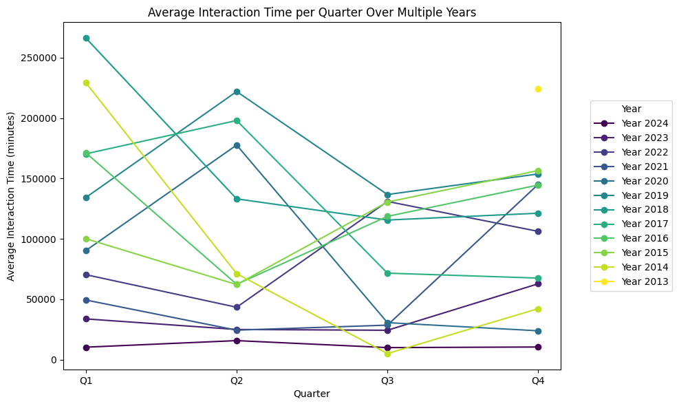
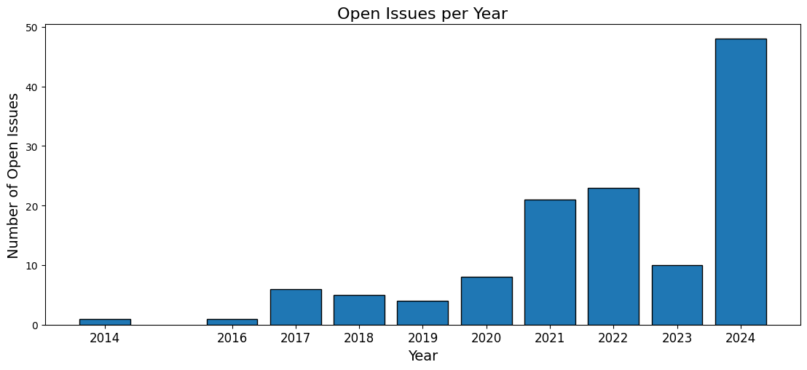
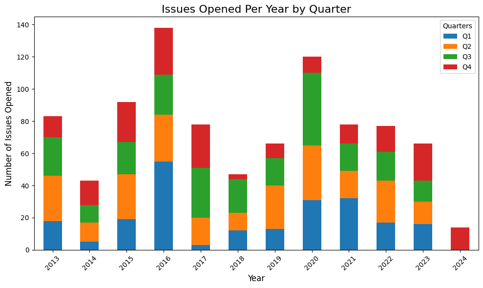
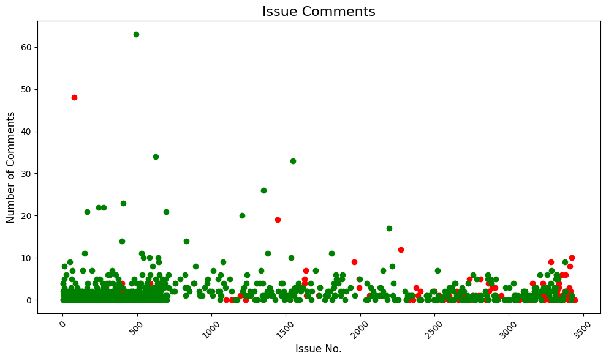
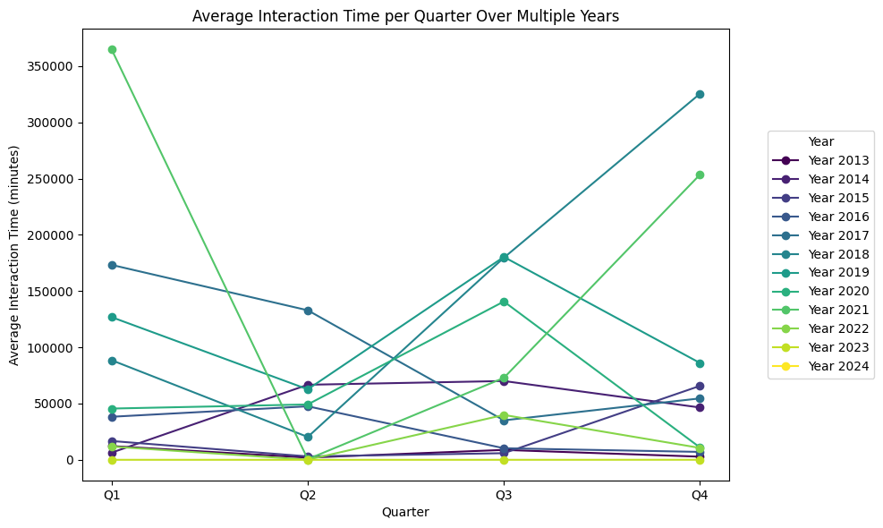
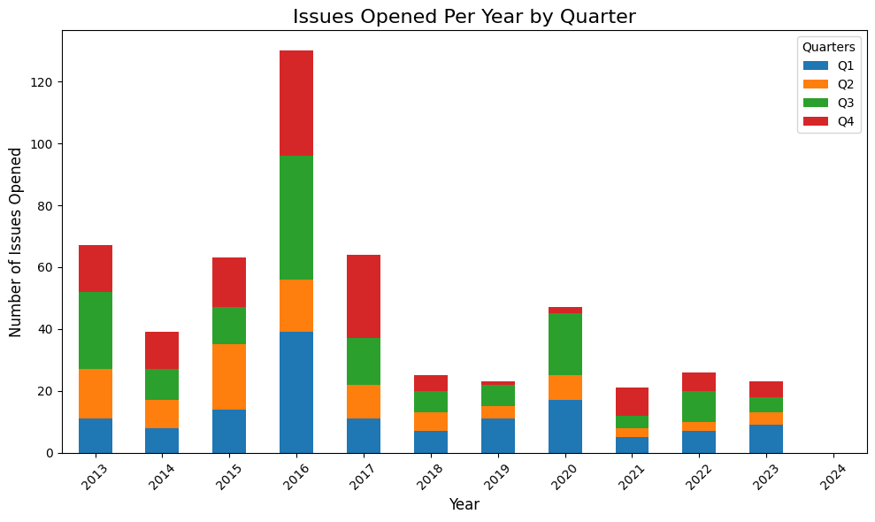

Cell In[3], line 1 --- ^ SyntaxError: invalid syntax
| Issue No. | Created At | Number of Comments | Closed At | Average Interaction Time | Ignored For | |
|---|---|---|---|---|---|---|
| 0 | 13 | 2013-12-10 18:34:35 | 0 | 2014-01-23 04:19:05 | 43 days, 9 hours, and 44 minutes | Closed |
| 1 | 12 | 2013-12-09 21:27:30 | 1 | 2013-12-10 18:24:32 | 0 days, 10 hours, and 28 minutes | Closed |
| 2 | 11 | 2013-11-29 17:19:26 | 3 | 2019-05-31 20:42:27 | 502 days, 6 hours, and 50 minutes | Closed |
| 3 | 10 | 2013-11-18 23:26:28 | 8 | 2013-11-21 20:43:40 | 0 days, 7 hours, and 41 minutes | Closed |
| 4 | 9 | 2013-11-18 18:39:35 | 5 | 2014-06-25 20:43:14 | 36 days, 12 hours, and 20 minutes | Closed |
| 5 | 8 | 2013-11-18 18:28:08 | 2 | 2014-09-23 20:48:49 | 103 days, 0 hours, and 46 minutes | Closed |
| 6 | 7 | 2013-11-18 04:49:54 | 1 | 2013-12-03 19:20:27 | 7 days, 19 hours, and 15 minutes | Closed |
| 7 | 6 | 2013-11-18 04:45:23 | 0 | 2015-05-13 21:30:22 | 541 days, 16 hours, and 44 minutes | Closed |
| 8 | 5 | 2013-11-18 04:30:39 | 1 | 2013-11-22 19:00:03 | 2 days, 7 hours, and 14 minutes | Closed |
| 9 | 4 | 2013-11-18 04:23:24 | 0 | 2014-11-11 15:28:56 | 358 days, 11 hours, and 5 minutes | Closed |
| 10 | 3 | 2013-11-16 00:57:05 | 0 | 2014-11-11 15:28:56 | 360 days, 14 hours, and 31 minutes | Closed |
| 11 | 2 | 2013-11-15 21:32:53 | 2 | 2013-12-07 20:05:19 | 7 days, 7 hours, and 30 minutes | Closed |
| 12 | 1 | 2013-11-15 15:16:10 | 4 | 2015-05-13 21:31:58 | 108 days, 20 hours, and 27 minutes | Closed |
| 13 | 1 | 2013-11-15 15:16:10 | 4 | 2015-05-13 21:31:58 | 108 days, 20 hours, and 27 minutes | Closed |
| Issue Number | Created At | Ignored For | |
|---|---|---|---|
| 0 | 3445 | 2024-11-23 20:46:12 | 1 days, 21 hours, and 33 minutes |
| 1 | 3437 | 2024-11-14 18:21:01 | 10 days, 23 hours, and 58 minutes |
| 2 | 3436 | 2024-11-14 16:58:56 | 11 days, 1 hours, and 21 minutes |
| 3 | 3434 | 2024-11-13 16:21:10 | 12 days, 1 hours, and 58 minutes |
| 4 | 3428 | 2024-11-04 14:24:43 | 21 days, 3 hours, and 55 minutes |
| ... | ... | ... | ... |
| 122 | 375 | 2017-04-16 03:35:32 | 2780 days, 14 hours, and 44 minutes |
| 123 | 357 | 2017-03-21 02:55:44 | 2806 days, 15 hours, and 24 minutes |
| 124 | 341 | 2017-02-21 16:38:51 | 2834 days, 1 hours, and 41 minutes |
| 125 | 314 | 2016-12-31 18:17:24 | 2886 days, 0 hours, and 2 minutes |
| 126 | 75 | 2014-10-06 14:05:28 | 3703 days, 4 hours, and 14 minutes |
127 rows × 3 columns
There are 20 issues with more than 10 comments| Issue No. | Created At | Number of Comments | Closed At | Ignored For | Average Interaction Time | |
|---|---|---|---|---|---|---|
| 0 | 2275 | 2021-10-28 13:11:38 | 12 | Still Open | 1124 days, 5 hours, and 8 minutes | 4 days, 1 hours, and 47 minutes |
| 1 | 2196 | 2021-10-04 16:52:18 | 17 | 2021-11-05 22:27:50 | Closed | 1 days, 18 hours, and 58 minutes |
| 2 | 1806 | 2021-05-09 15:03:58 | 11 | 2021-10-01 22:30:27 | Closed | 12 days, 2 hours, and 37 minutes |
| 3 | 1548 | 2021-02-20 00:50:07 | 33 | 2021-09-02 19:41:47 | Closed | 5 days, 17 hours, and 29 minutes |
| 4 | 1445 | 2021-02-01 21:29:40 | 19 | Still Open | 1392 days, 20 hours, and 50 minutes | 38 days, 10 hours, and 20 minutes |
| 5 | 1380 | 2021-01-18 21:47:27 | 11 | 2021-01-19 22:00:59 | Closed | 0 days, 2 hours, and 1 minutes |
| 6 | 1351 | 2021-01-06 23:34:09 | 26 | 2021-02-09 22:27:57 | Closed | 1 days, 6 hours, and 10 minutes |
| 7 | 1207 | 2020-11-20 17:08:54 | 20 | 2021-11-30 22:11:19 | Closed | 17 days, 20 hours, and 48 minutes |
| 8 | 832 | 2020-07-02 21:04:53 | 14 | 2021-01-18 20:19:51 | Closed | 13 days, 7 hours, and 56 minutes |
| 9 | 695 | 2020-04-24 12:12:54 | 21 | 2020-11-25 17:26:57 | Closed | 9 days, 18 hours, and 47 minutes |
| 10 | 625 | 2019-06-26 21:10:12 | 34 | 2021-10-02 11:11:16 | Closed | 23 days, 16 hours, and 10 minutes |
| 11 | 529 | 2018-05-16 16:49:24 | 11 | 2021-10-02 11:10:39 | Closed | 102 days, 21 hours, and 31 minutes |
| 12 | 494 | 2018-01-16 18:43:58 | 63 | 2021-12-07 16:28:58 | Closed | 22 days, 4 hours, and 50 minutes |
| 13 | 408 | 2017-06-29 17:11:03 | 23 | 2018-10-12 18:27:46 | Closed | 19 days, 14 hours, and 3 minutes |
| 14 | 396 | 2017-06-19 17:42:42 | 14 | 2021-02-19 18:29:09 | Closed | 89 days, 9 hours, and 39 minutes |
| 15 | 275 | 2016-07-12 16:54:23 | 22 | 2020-06-11 15:38:02 | Closed | 62 days, 4 hours, and 7 minutes |
| 16 | 241 | 2016-02-18 23:44:21 | 22 | 2016-03-04 16:08:34 | Closed | 0 days, 15 hours, and 19 minutes |
| 17 | 164 | 2015-07-17 14:14:55 | 21 | 2021-08-31 14:22:15 | Closed | 101 days, 16 hours, and 22 minutes |
| 18 | 146 | 2015-06-04 19:57:04 | 11 | 2017-06-14 01:50:21 | Closed | 61 days, 16 hours, and 29 minutes |
| 19 | 75 | 2014-10-06 14:05:28 | 48 | Still Open | 3703 days, 4 hours, and 14 minutes | 47 days, 23 hours, and 40 minutes |
There are 346 issues with 0 comments| Issue No. | Created At | Number of Comments | Closed At | Ignored For | Average Interaction Time | |
|---|---|---|---|---|---|---|
| 0 | 3445 | 2024-11-23 20:46:12 | 0 | Still Open | 1 days, 21 hours, and 33 minutes | No interaction |
| 1 | 3437 | 2024-11-14 18:21:01 | 0 | Still Open | 10 days, 23 hours, and 58 minutes | No interaction |
| 2 | 3436 | 2024-11-14 16:58:56 | 0 | Still Open | 11 days, 1 hours, and 21 minutes | No interaction |
| 3 | 3434 | 2024-11-13 16:21:10 | 0 | Still Open | 12 days, 1 hours, and 58 minutes | No interaction |
| 4 | 3428 | 2024-11-04 14:24:43 | 0 | Still Open | 21 days, 3 hours, and 55 minutes | No interaction |
| ... | ... | ... | ... | ... | ... | ... |
| 341 | 16 | 2014-01-16 14:04:57 | 0 | 2015-05-28 19:01:20 | Closed | 497 days, 4 hours, and 56 minutes |
| 342 | 13 | 2013-12-10 18:34:35 | 0 | 2014-01-23 04:19:05 | Closed | 43 days, 9 hours, and 44 minutes |
| 343 | 6 | 2013-11-18 04:45:23 | 0 | 2015-05-13 21:30:22 | Closed | 541 days, 16 hours, and 44 minutes |
| 344 | 4 | 2013-11-18 04:23:24 | 0 | 2014-11-11 15:28:56 | Closed | 358 days, 11 hours, and 5 minutes |
| 345 | 3 | 2013-11-16 00:57:05 | 0 | 2014-11-11 15:28:56 | Closed | 360 days, 14 hours, and 31 minutes |
346 rows × 6 columns
There are 46 issues which are left open for at least 3-5 years| Issue No. | Created At | Number of Comments | Closed At | Ignored For | Average Interaction Time | |
|---|---|---|---|---|---|---|
| 0 | 2411 | 2021-12-22 13:23:33 | 0 | Still Open | 1069 days, 4 hours, and 56 minutes | No interaction |
| 1 | 2404 | 2021-12-16 00:31:07 | 2 | Still Open | 1075 days, 17 hours, and 48 minutes | 0 days, 6 hours, and 53 minutes |
| 2 | 2403 | 2021-12-14 16:26:09 | 0 | Still Open | 1077 days, 1 hours, and 53 minutes | No interaction |
| 3 | 2390 | 2021-12-10 15:03:10 | 1 | Still Open | 1081 days, 3 hours, and 16 minutes | 81 days, 4 hours, and 6 minutes |
| 4 | 2378 | 2021-12-07 14:22:13 | 3 | Still Open | 1084 days, 3 hours, and 57 minutes | 121 days, 8 hours, and 8 minutes |
| 5 | 2356 | 2021-11-24 15:49:28 | 0 | Still Open | 1097 days, 2 hours, and 30 minutes | No interaction |
| 6 | 2332 | 2021-11-17 16:32:27 | 0 | Still Open | 1104 days, 1 hours, and 47 minutes | No interaction |
| 7 | 2275 | 2021-10-28 13:11:38 | 12 | Still Open | 1124 days, 5 hours, and 8 minutes | 4 days, 1 hours, and 47 minutes |
| 8 | 2138 | 2021-09-06 14:18:03 | 1 | Still Open | 1176 days, 4 hours, and 1 minutes | 16 days, 1 hours, and 27 minutes |
| 9 | 2062 | 2021-08-10 14:36:36 | 1 | Still Open | 1203 days, 3 hours, and 43 minutes | 69 days, 6 hours, and 54 minutes |
| 10 | 1994 | 2021-07-15 07:02:55 | 3 | Still Open | 1229 days, 11 hours, and 17 minutes | 63 days, 22 hours, and 37 minutes |
| 11 | 1993 | 2021-07-14 18:45:50 | 5 | Still Open | 1229 days, 23 hours, and 34 minutes | 96 days, 13 hours, and 11 minutes |
| 12 | 1960 | 2021-07-02 22:22:33 | 9 | Still Open | 1241 days, 19 hours, and 57 minutes | 9 days, 23 hours, and 47 minutes |
| 13 | 1723 | 2021-04-12 15:02:52 | 1 | Still Open | 1323 days, 3 hours, and 17 minutes | 0 days, 1 hours, and 40 minutes |
| 14 | 1640 | 2021-03-16 13:14:59 | 1 | Still Open | 1350 days, 5 hours, and 5 minutes | 155 days, 22 hours, and 10 minutes |
| 15 | 1633 | 2021-03-13 10:59:29 | 7 | Still Open | 1353 days, 7 hours, and 20 minutes | 3 days, 21 hours, and 32 minutes |
| 16 | 1628 | 2021-03-12 04:00:55 | 5 | Still Open | 1354 days, 14 hours, and 19 minutes | 0 days, 22 hours, and 29 minutes |
| 17 | 1625 | 2021-03-11 18:09:07 | 4 | Still Open | 1355 days, 0 hours, and 10 minutes | 29 days, 13 hours, and 36 minutes |
| 18 | 1615 | 2021-03-08 18:10:56 | 3 | Still Open | 1358 days, 0 hours, and 9 minutes | 0 days, 0 hours, and 5 minutes |
| 19 | 1528 | 2021-02-17 23:34:30 | 0 | Still Open | 1376 days, 18 hours, and 45 minutes | No interaction |
| 20 | 1445 | 2021-02-01 21:29:40 | 19 | Still Open | 1392 days, 20 hours, and 50 minutes | 38 days, 10 hours, and 20 minutes |
| 21 | 1232 | 2020-11-25 17:33:49 | 0 | Still Open | 1461 days, 0 hours, and 46 minutes | No interaction |
| 22 | 1231 | 2020-11-25 15:53:16 | 1 | Still Open | 1461 days, 2 hours, and 26 minutes | 27 days, 23 hours, and 22 minutes |
| 23 | 1192 | 2020-11-13 12:12:58 | 1 | Still Open | 1473 days, 6 hours, and 7 minutes | 7 days, 5 hours, and 25 minutes |
| 24 | 1157 | 2020-10-29 22:46:49 | 0 | Still Open | 1487 days, 19 hours, and 33 minutes | No interaction |
| 25 | 1135 | 2020-10-21 21:34:01 | 0 | Still Open | 1495 days, 20 hours, and 45 minutes | No interaction |
| 26 | 1100 | 2020-10-02 19:47:12 | 0 | Still Open | 1514 days, 22 hours, and 32 minutes | No interaction |
| 27 | 882 | 2020-07-16 17:52:51 | 4 | Still Open | 1593 days, 0 hours, and 27 minutes | 76 days, 11 hours, and 9 minutes |
| 28 | 698 | 2020-04-30 13:55:45 | 1 | Still Open | 1670 days, 4 hours, and 24 minutes | 0 days, 0 hours, and 19 minutes |
| 29 | 654 | 2019-08-29 10:32:33 | 0 | Still Open | 1915 days, 7 hours, and 47 minutes | No interaction |
| 30 | 651 | 2019-08-15 19:03:49 | 4 | Still Open | 1928 days, 23 hours, and 16 minutes | 212 days, 23 hours, and 21 minutes |
| 31 | 588 | 2019-01-15 17:45:05 | 4 | Still Open | 2141 days, 0 hours, and 34 minutes | 437 days, 11 hours, and 51 minutes |
| 32 | 582 | 2019-01-02 18:12:37 | 2 | Still Open | 2154 days, 0 hours, and 7 minutes | 0 days, 10 hours, and 42 minutes |
| 33 | 579 | 2018-12-21 19:49:52 | 0 | Still Open | 2165 days, 22 hours, and 30 minutes | No interaction |
| 34 | 570 | 2018-09-24 13:15:19 | 0 | Still Open | 2254 days, 5 hours, and 4 minutes | No interaction |
| 35 | 558 | 2018-08-20 18:12:39 | 0 | Still Open | 2289 days, 0 hours, and 7 minutes | No interaction |
| 36 | 540 | 2018-06-15 16:19:27 | 1 | Still Open | 2355 days, 2 hours, and 0 minutes | 389 days, 0 hours, and 57 minutes |
| 37 | 495 | 2018-01-24 19:30:08 | 1 | Still Open | 2496 days, 22 hours, and 49 minutes | 1797 days, 12 hours, and 27 minutes |
| 38 | 407 | 2017-06-28 16:50:51 | 2 | Still Open | 2707 days, 1 hours, and 29 minutes | 1157 days, 23 hours, and 4 minutes |
| 39 | 397 | 2017-06-19 23:59:44 | 4 | Still Open | 2715 days, 18 hours, and 20 minutes | 0 days, 4 hours, and 35 minutes |
| 40 | 385 | 2017-05-27 22:09:02 | 0 | Still Open | 2738 days, 20 hours, and 10 minutes | No interaction |
| 41 | 375 | 2017-04-16 03:35:32 | 1 | Still Open | 2780 days, 14 hours, and 44 minutes | 333 days, 23 hours, and 32 minutes |
| 42 | 357 | 2017-03-21 02:55:44 | 2 | Still Open | 2806 days, 15 hours, and 24 minutes | 532 days, 6 hours, and 14 minutes |
| 43 | 341 | 2017-02-21 16:38:51 | 0 | Still Open | 2834 days, 1 hours, and 41 minutes | No interaction |
| 44 | 314 | 2016-12-31 18:17:24 | 4 | Still Open | 2886 days, 0 hours, and 2 minutes | 625 days, 17 hours, and 29 minutes |
| 45 | 75 | 2014-10-06 14:05:28 | 48 | Still Open | 3703 days, 4 hours, and 14 minutes | 47 days, 23 hours, and 40 minutes |
3.127429805615551




Note that most of these metrics will need cleaning up / fixing. They are buggy right now.
| Issue No. | Created At | Number of Comments | Closed At | Average Interaction Time | Ignored For | |
|---|---|---|---|---|---|---|
| 0 | 3444 | 2024-11-21 09:24:28 | 1 | Still Open | 0 days, 0 hours, and 0 minutes | 4 days, 8 hours, and 55 minutes |
| 1 | 3443 | 2024-11-21 07:55:00 | 1 | 2024-11-21 12:05:57 | 0 days, 2 hours, and 5 minutes | Closed |
| 2 | 3442 | 2024-11-20 18:51:15 | 0 | 2024-11-21 13:41:44 | 0 days, 18 hours, and 50 minutes | Closed |
| 3 | 3440 | 2024-11-20 06:30:39 | 1 | Still Open | 0 days, 0 hours, and 0 minutes | 5 days, 11 hours, and 49 minutes |
| 4 | 3439 | 2024-11-19 19:33:37 | 1 | Still Open | 1 days, 19 hours, and 10 minutes | 5 days, 22 hours, and 46 minutes |
| ... | ... | ... | ... | ... | ... | ... |
| 62 | 3213 | 2024-01-14 18:42:50 | 1 | 2024-01-14 18:47:26 | 0 days, 0 hours, and 2 minutes | Closed |
| 63 | 3212 | 2024-01-14 18:06:21 | 0 | 2024-01-14 18:07:18 | 0 days, 0 hours, and 0 minutes | Closed |
| 64 | 3211 | 2024-01-14 17:58:38 | 1 | 2024-01-14 18:02:34 | 0 days, 0 hours, and 1 minutes | Closed |
| 65 | 3204 | 2024-01-03 20:44:53 | 9 | 2024-04-30 22:23:13 | 11 days, 19 hours, and 21 minutes | Closed |
| 66 | 3201 | 2024-01-02 14:02:46 | 5 | 2024-02-02 22:09:39 | 5 days, 5 hours, and 21 minutes | Closed |
67 rows × 6 columns
| Issue Number | Created At | Ignored For | |
|---|---|---|---|
| 0 | 3445 | 2024-11-23 20:46:12 | 1 days, 21 hours, and 33 minutes |
| 1 | 3437 | 2024-11-14 18:21:01 | 10 days, 23 hours, and 58 minutes |
| 2 | 3436 | 2024-11-14 16:58:56 | 11 days, 1 hours, and 21 minutes |
| 3 | 3434 | 2024-11-13 16:21:10 | 12 days, 1 hours, and 58 minutes |
| 4 | 3428 | 2024-11-04 14:24:43 | 21 days, 3 hours, and 55 minutes |
| ... | ... | ... | ... |
| 122 | 375 | 2017-04-16 03:35:32 | 2780 days, 14 hours, and 44 minutes |
| 123 | 357 | 2017-03-21 02:55:44 | 2806 days, 15 hours, and 24 minutes |
| 124 | 341 | 2017-02-21 16:38:51 | 2834 days, 1 hours, and 41 minutes |
| 125 | 314 | 2016-12-31 18:17:24 | 2886 days, 0 hours, and 2 minutes |
| 126 | 75 | 2014-10-06 14:05:28 | 3703 days, 4 hours, and 14 minutes |
127 rows × 3 columns
There are 2 issues which are left open for at least 3-5 years| Issue No. | Created At | Number of Comments | Closed At | Average Interaction Time | Ignored For | |
|---|---|---|---|---|---|---|
| 0 | 2360 | 2021-11-27 18:40:46 | 6 | Still Open | 1 days, 11 hours, and 58 minutes | 1093 days, 23 hours, and 39 minutes |
| 1 | 1954 | 2021-06-30 16:56:59 | 13 | Still Open | 7 days, 10 hours, and 57 minutes | 1244 days, 1 hours, and 23 minutes |



The idea is to create a github workflow that’ll run a host of GHA that will use our script to fetch and update data and publish a refresh our dashboard/report.
Things that I’m unsure about:
- What/how will the deployment look like? It’ll use Quarto, but are we planning to have a PDF